Readable export of my Spring 2024 assignment. The text and embedded outputs are retained from the original submission. The portfolio overview provides a concise explanation of the methods and skills.
Homework 3: Measurement & Evaluation of HCC Systems (HCC 6400)
Raphael Maris Ugboko
March 29, 2024.
Question 1. Logistic regression
Input:
allknown <- tw$known == 10
Input:
allknown_reg <- glm(allknown ~ expertise, data = tw, family = binomial)
summary(allknown_reg)
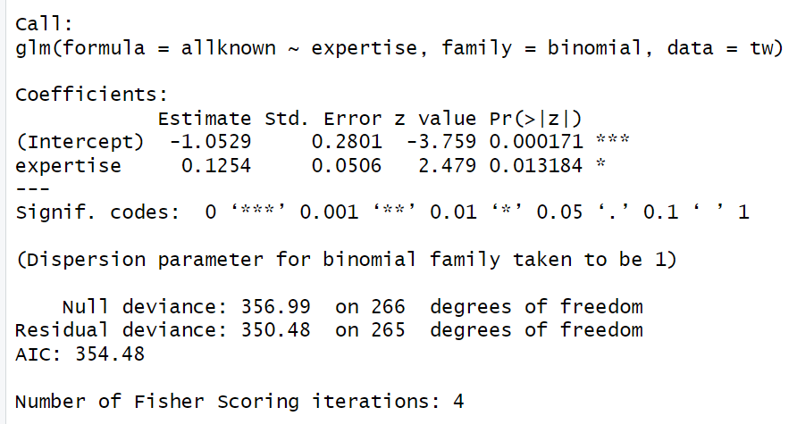
Saved figure or output 1 · original Homework 3 submission. Select the image to inspect it at full size.Yes, expertise has a significant effect on allknown.
# -2 Log Likelihood (-2LL)
ratio <- allknown_reg1$null.deviance - allknown_reg1$deviance
df <- allknown_reg1$df.null - allknown_reg1$df.residual
# True p-value
1 - pchisq(ratio, df)
The associated p-value is .0107
# probability of knowing all recommendations at expertise = 0
1/(1+exp(-(-1.0529 + 0.1254 * 0)))
The probabilityof already knowing allrecommendations for someone with expertise = 0 is 0.259.
# probability of knowing all recommendations at expertise = 4
1/(1+exp(-(-1.0529 + 0.1254 * 4)))
The probabilityof already knowing allrecommendations for someone with expertise = 4 is 0.366
exp(allknown_reg1$coefficients)
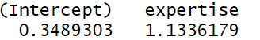
Saved figure or output 2 · original Homework 3 submission. Select the image to inspect it at full size.XX is 13.36%
The odds of already knowing allthe recommendations are predicted to be13.36% higher for participants with a 1-point higher level of musicexpertise.
Input
exp(confint(allknown_reg1))
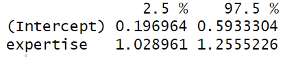
Saved figure or output 3 · original Homework 3 submission. Select the image to inspect it at full size.The odds of music expertise are estimated to be between 1.029 and 1.256. This confidence interval suggests that music expertise is significant because it doesn’t cross one.
Input:
allknown_reg0 <- glm(allknown ~ 1, data = tw, family = binomial)
anova(allknown_reg0,allknown_reg1)
# -2 Log Likelihood (-2LL)
ratio <- allknown_reg1$null.deviance - allknown_reg1$deviance
df <- allknown_reg1$df.null - allknown_reg1$df.residual
# True p-value
1 - pchisq(ratio, df)
The chi square value is 6.513 and the p-value is .0107
This value is the same as the value in 1b because I had already calculated the true p-value there. However, if I hadn’t, it would have been different because the value in 1b considers the effect of expertise in its model, whereas this value (p = .0107) was derived by comparing the model in 1b with a model that doesn’t have the effect of expertise. The value in 1b is slightly inflated due to the effect of expertise.
Input:
(1 - exp(-ratio/267))/(1-exp(-allknown_reg1$null.deviance/267))
The Nagelkerke R2 for this model is 0.0327
Input:
allknown_reg2 <- glm(allknown ~ expertise + inspectability, data = tw, family = binomial)
summary(allknown_reg2)
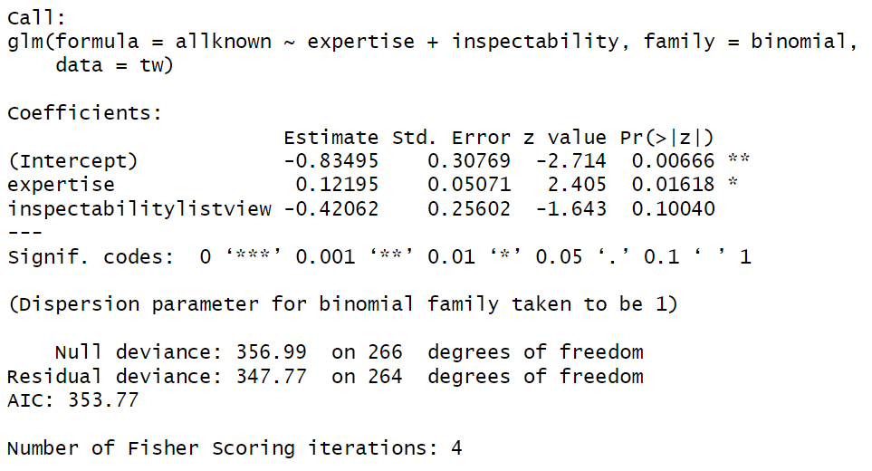
Saved figure or output 4 · original Homework 3 submission. Select the image to inspect it at full size.exp(allknown_reg2$coefficients)
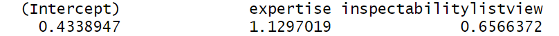
Saved figure or output 5 · original Homework 3 submission. Select the image to inspect it at full size.XX is 65.66%
Therefore, controlling for musicexpertise, the odds of already knowing all the recommendations are predicted to be 65.66% higher for participants in the graph view condition than for participants in the list view condition.
exp(confint(allknown_reg2))
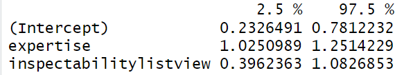
Saved figure or output 6 · original Homework 3 submission. Select the image to inspect it at full size.The odds of inspectability are estimated to be between .396 and 1.083. This confidence interval suggests that inspectability is not significant because it crosses one.
Input:
ratio2 <- allknown_reg1$deviance - allknown_reg2$deviance
df2 <- allknown_reg1$df.residual - allknown_reg2$df.residual
# True p-value
1 - pchisq(ratio2, df2)
The chi-square value is 2.716 and the p-value is .099. This value is not significant, which suggests that this model is not a significant improvement over our first model.
Input:
# m
# Cox and Snell Rsquared
1 - exp(-ratio2/267)
# Nagelkerke Rsquared
(1 - exp(-ratio2/267))/(1-exp(-allknown_reg1$deviance/267))
The Nagelkerke R2 for this model is 0.0138
Input:
chisq1 <- 6.531
df1 <- 1
null_dev1 <- 356.99
dev1 <- 350.48
# Hosmer and Lemeshow Rsquared
(null_dev1 - dev1) / null_dev1
# Cox and Snell Rsquared
1 - exp(-(null_dev1 - dev1)/267)
# Nagelkerke Rsquared
(1 - exp(-(null_dev1 - dev1)/267)) / (1 - exp(-(null_dev1)/267))
chisq2 <- 2.716
df2 <- 1
null_dev2 <- 350.48
dev2 <- 347.77
# Hosmer and Lemeshow Rsquared
(null_dev2 - dev2) / null_dev2
# Cox and Snell Rsquared
1 - exp(-(null_dev2 - dev2)/267)
# Nagelkerke Rsquared
(1 - exp(-(null_dev2 - dev2)/267)) / (1 - exp(-(null_dev2)/267))
| B (SE) | 95% CI for odds ratio | p |
| | Lower | Odds ratio | Upper | |
Model 1 | | | | | |
Constant | -1.053 (0.280) | | | | < .01 |
Expertise | 0.125(0.051) | 1.029 | 1.1336 | 1.255 | 0.013 |
Model 2 | | | | | |
Constant | -0.835(0.308) | | | | <.01 |
Expertise | 0.122(0.0507) | 1.025 | 1.129 | 1.251 | 0.016 |
Inspectability | -0.421(0.256) | 0.396 | 0.657 | 1.083 | 0.1 |
Model 1: R2 = .018 (Hosmer–Lemeshow), .024 (Cox–Snell), .033 (Nagelkerke).
Model 2: R2 = .0077 (Hosmer–Lemeshow), .01 (Cox–Snell), .0138 (Nagelkerke).
Question 2. Poisson regression
tw$dontknow <- 10 - tw$known
Input:
ggplot(tw, aes(dontknow)) + geom_histogram(aes(y=..density..),
binwidth=1, color="black", fill="white") + stat_function(fun = dnorm,
args = list(mean = mean(tw$dontknow), sd = sd(tw$dontknow)))
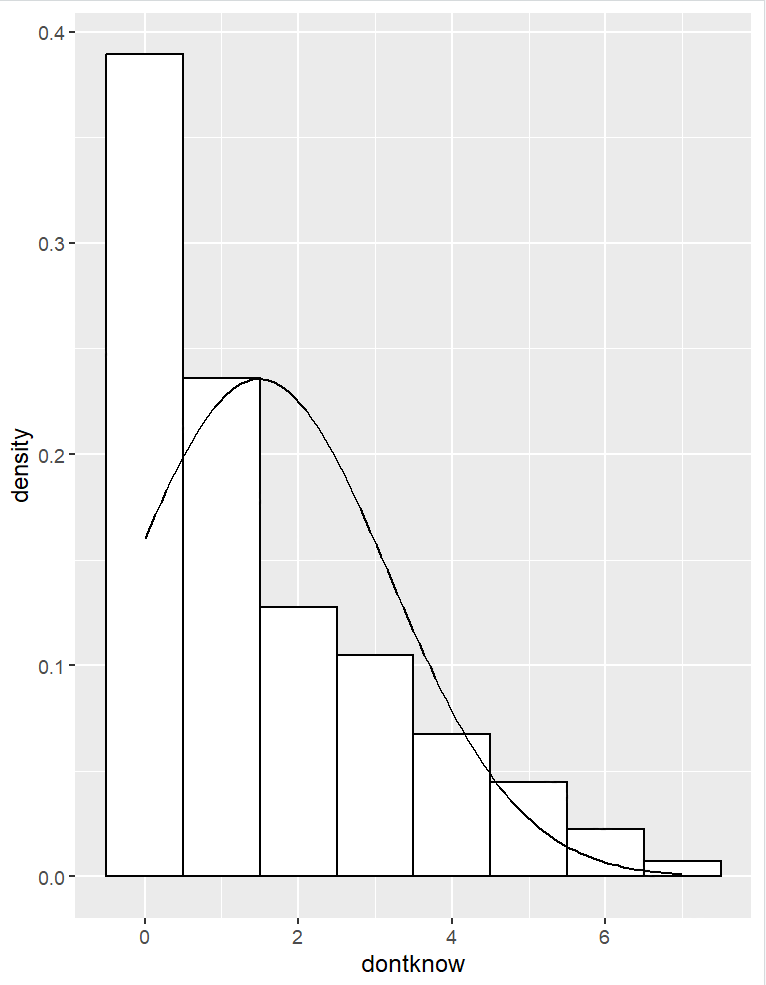
Saved figure or output 7 · original Homework 3 submission. Select the image to inspect it at full size.No it doesn’t look normally distributed. We may end up with negative predictions if we run it with a linear regression, because the dontknow variables are count variables and are non linear and bounded. Also, the variables are not normally distributed.
Input:
lm_dontknow <- lm(dontknow ~ expertise + inspectability, data = tw)
summary(lm_dontknow)
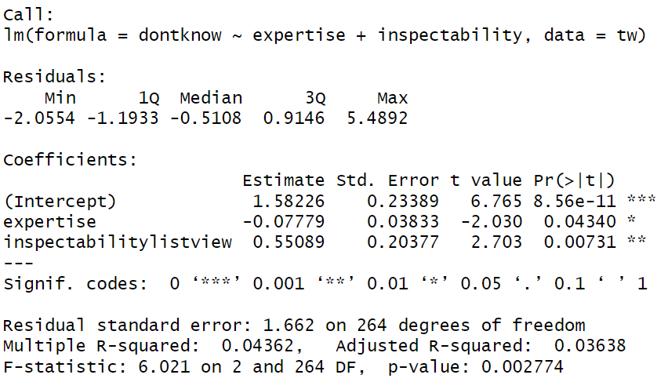
Saved figure or output 8 · original Homework 3 submission. Select the image to inspect it at full size.Overall, 4.36% of the variance in the number of unknown recommendations can be explained by expertise and inspectability and this relationship is significant (F(2,264) = 6.021, p = .00278).
1.582 represents the value of dontknow when expertise is 0 and inspectability (list vs graph) is in the baseline condition i.e., on average, a participant without music expertise in the baseline condition is expected to not know about 1.58 recommendations.
On average, for every one-unit increase in expertise, the number of unknown recommendations decreases by .0778, which suggests that the higher the expertise, the higher the knowledge of recommendations. This relationship between expertise and unknown (dontknow) is significant (p = .0434).
On average, the participants in the list view condition did not know .551 more recommendations than those in the graph view condition. This relationship is also significant (p = .00731).
4.36% of the variance in “dontknow” is explained by thepredictors (expertise and inspectability).
tw$lmresid <- rstandard(lm_dontknow)
tw$lmresid.large <- (tw$lmresid > 1.96 | tw$lmresid < -1.96)
tw[tw$lmresid.large,]
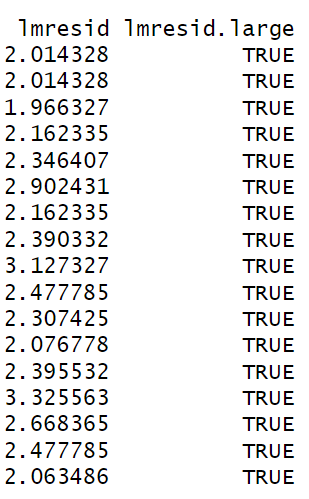
Saved figure or output 9 · original Homework 3 submission. Select the image to inspect it at full size.No, they are not problematic. The numbers are not so large.
plot(lm_dontknow)
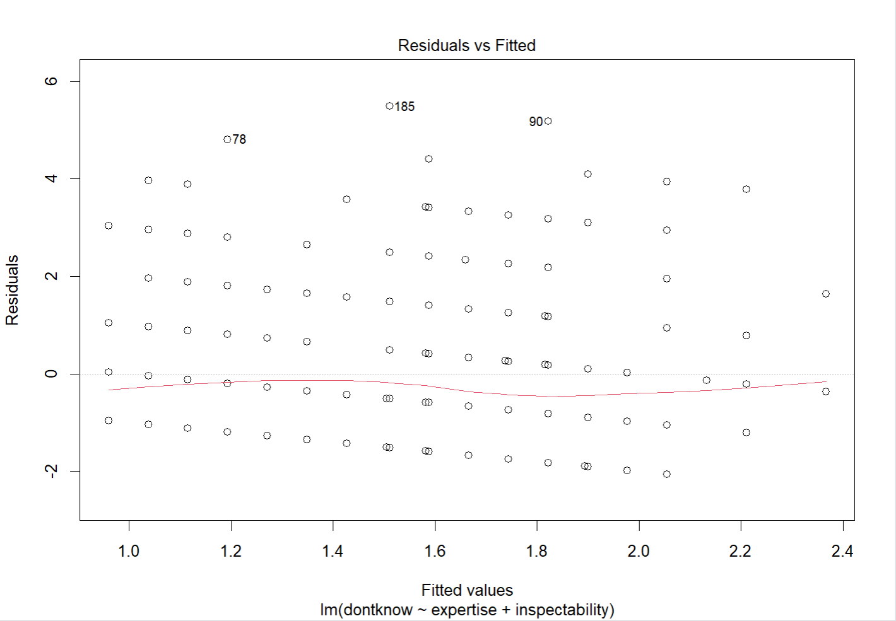
Saved figure or output 10 · original Homework 3 submission. Select the image to inspect it at full size.There is no heteroscedasticity, which suggests that they are likely unproblematic.
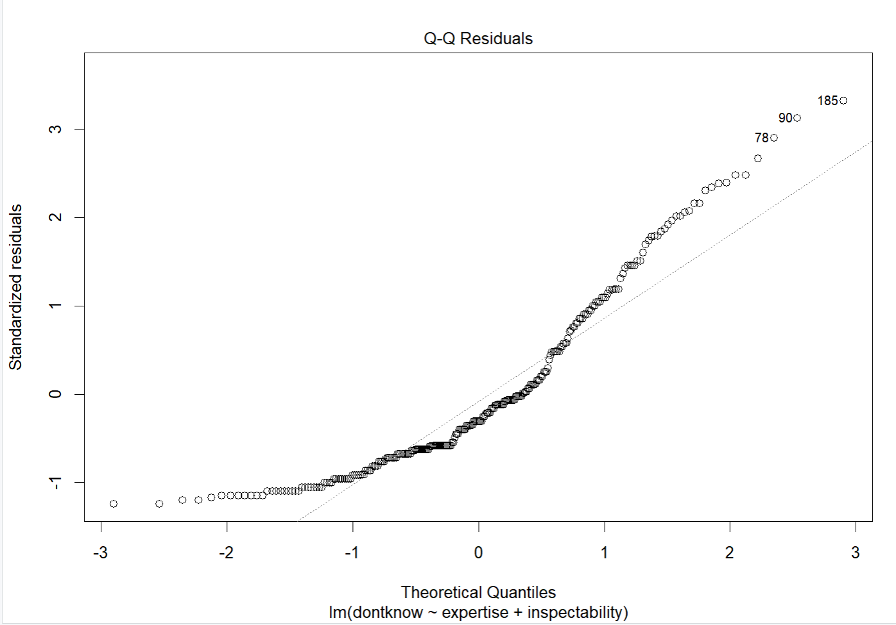
Saved figure or output 11 · original Homework 3 submission. Select the image to inspect it at full size.There are outliers, which would suggest otherwise.
And if we run Cook’s distance,
lm_dontknow$cook <- cooks.distance(lm_dontknow)
tw[tw$lmresid.large,c("cook")]
We get “NULL” because the values are < 1, which suggests that these outliers are not cause for concern.
Input:
lmp_dontknow <- glm(dontknow ~ expertise + inspectability, data = tw, family = quasipoisson())
summary(lmp_dontknow)
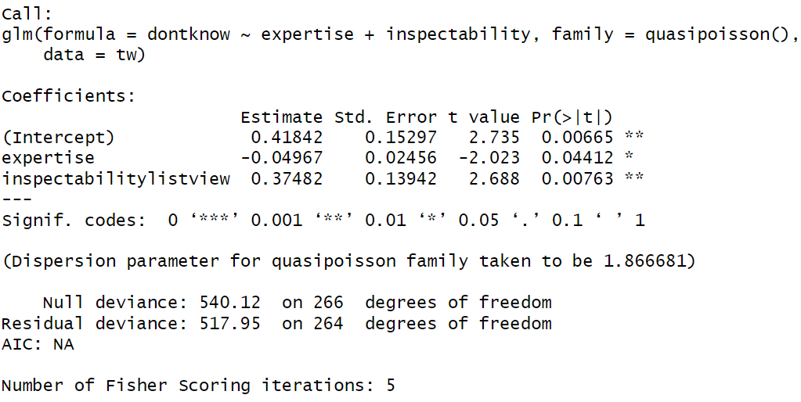
Saved figure or output 12 · original Homework 3 submission. Select the image to inspect it at full size.The p-values of the predictors suggest that Expertise has a significant effect on dontknow i.e. unknown recommendations (p = .044) and Inspectability also has a significant effect on dontknow i.e. unknown recommendations (p = .0076).
exp(lmp_dontknow$coefficients)
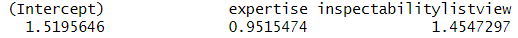
Saved figure or output 13 · original Homework 3 submission. Select the image to inspect it at full size.XX <- (0.9515474−1)×100
XX <- -4.85
Therefore, controlling for the effect of inspectability condition, participants with a 1-point higher level of music expertise are predicted to have 4.85% fewer unknown recommendations.
XX <- (1 –1.4547) x 100
XX <- 54.53%
Therefore, controlling for music expertise, participants in the graph view condition are predicted to have 54.53% fewer unknown recommendations than participants in the list view condition.
exp(confint(lmp_dontknow))
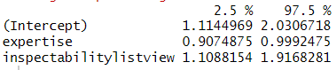
Saved figure or output 14 · original Homework 3 submission. Select the image to inspect it at full size.We are 95% confident that the difference in unknown recommendations for a one-unit increase in music expertise (controlling for inspectability) is between 0.907 and 0.99. It doesn’t cross one so it is significant.
We are also 95% confident that the difference in unknown recommendations for participants in the list view condition compared to those in the graph view condition (controlling for music expertise) is between 10.88% and 91.68%. It also doesn’t cross one so it is also significant.
Input:
ratio3 <- lmp_dontknow$null.deviance - lmp_dontknow$deviance
df3 <- lmp_dontknow$df.null - lmp_dontknow$df.residual
# True p-value
1 - pchisq(ratio3, df3)
The chi square value is 22.167 and the p-value is 1.536e-05
(1 - exp(-ratio3/267))/(1-exp(-lmp_dontknow$null.deviance/267))
The Nagelkerke R2 for this model is .0918. I would say it is better because this model has a higher R2 value than the Linear regression.
Input:
tw$lmresidP <- rstandard(lmp_dontknow)
tw$lmresidP.large <- (tw$lmresidP > 1.96 | tw$lmresidP < -1.96)
tw[tw$lmresidP.large,]
plot(lmp_dontknow)
Yes, they are better than linear regression.
Question 3. Chi-square test
mosaicplot(table(privacy), shade = T)
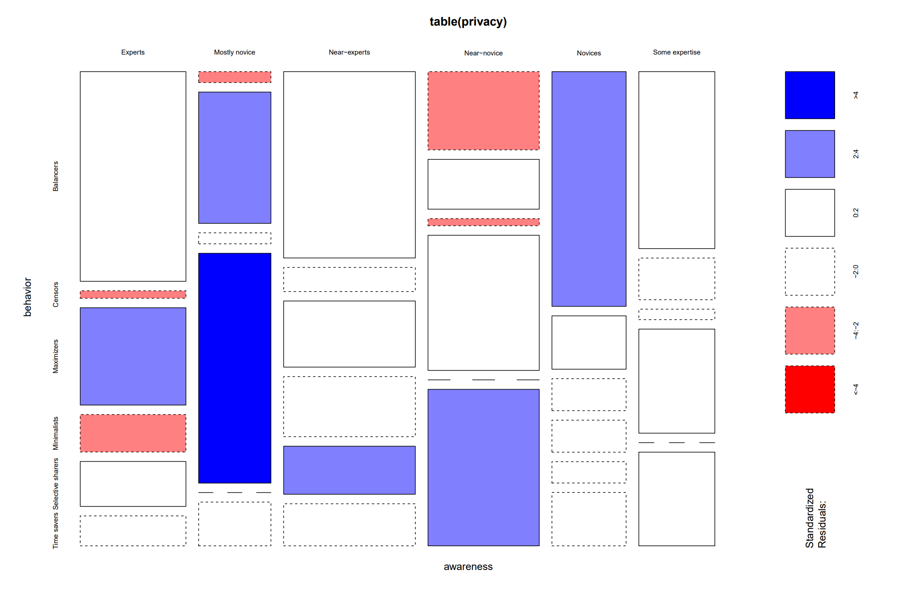
Saved figure or output 15 · original Homework 3 submission. Select the image to inspect it at full size.Yes, I feel there is a relation between privacy awareness and privacy behavior because there are standardized residuals larger than 2 in the mosaic plot.
CrossTable(table(privacy), expected = T, sresid = T, format = "SPSS")
Yes there is a significant relation between privacy awareness and privacy behavior based on the p value (p = 3.601029e-17) and the standardized residuals. Some Standardised residuals are significant.
There are 12 expected counts below 5. This could potentially be a problem because according to the assumptions fo the chi square test, expected frequencies should be > 5 for at least 20% of the table. These 12 counts represent 33% of the table and the chi-square test may not accurately assess the significance of the relationship between variables.
Balancers
The 28 users with Balancer privacy behaviors are significantly higher than expected (Std residual = 1.694, p = 0.0446). If there was no relationship, there would have been lesser than 28 Balancers users.
Censors
The 1 user with Censor privacy behavior is significantly lower than expected (Std residual = -2.067, p = 0.0194). If there was no relationship, there would have been more than 1 user with Censor privacy behavior.
Maximizers
The 13 users with Maximizer privacy behaviors are significantly higher than expected (Std residual = 3.161, p = 0.0008). If there was no relationship, there would have been lesser than 13 Maximizer users.
Minimalists
The 5 users with Minimalist privacy behavior are significantly lower than expected (Std residual = -2.138, p = 0.0163). If there was no relationship, there would have been more than 5 users with Minimalist privacy behavior.
Selective sharers
The 6 users with Selective sharers privacy behaviors are significantly higher than expected (Std residual = 1.766, p = 0.0388). If there was no relationship, there would have been lesser than 6 Selective sharers.
Time savers
The 4 users with Time saver privacy behavior are significantly lower than expected (Std residual = -1.770, p = 0.0384). If there was no relationship, there would have been more than 5 users with Minimalist privacy behavior.
Maximizers show a significantly higher count of Experts (Std residual = 3.161) and Near-experts (Std residual = 2.412) than expected, suggesting that there are more Maximizers with higher privacy awareness than expected. Additionally, they show significantly lower counts of Censors (Std Residual = -2.004) and Near-novices (Std Residual = -1.765) than expected, suggesting that there are fewer Maximizers with lower levels of privacy awareness than expected.
Minimalists show a significantly higher count of Balancers (Std Residual = 4.222) and Time savers (Std Residual = 3.828) than expected, suggesting that there are more Minimalists with behaviors associated with Balancers and Time savers than expected. Also, they show significantly lower counts of Experts (Std Residual = -2.138) and Novices (Std Residual = -1.436) than expected, suggesting that there are fewer Minimalists with higher levels of privacy awareness than expected.
Input:
Odds_Max_Min_Experts <- 13/5
Odds_others <- (1 + 11 + 1 + 3 + 1) / (21 + 10 + 19 + 3 + 10)
odds_ratio <- Odds_Max_Min_Experts / Odds_others
The odds ratio is 9.635
There was a significant association between privacy awareness (Experts, Mostly novice, Near-experts, Near-novice, Novices, Some expertise) and privacy behavior (Balancers, Censors, Maximizers, Minimalists, Selective Sharers, Time Savers) X2(2) = 135.6, p < .01. Upon analyzing the effect, we found that the odds of being a Maximizer rather than a Minimalist was 9.635 times higher among Expert users than for others.
Collaboration Statement
I worked on this assignment alone.